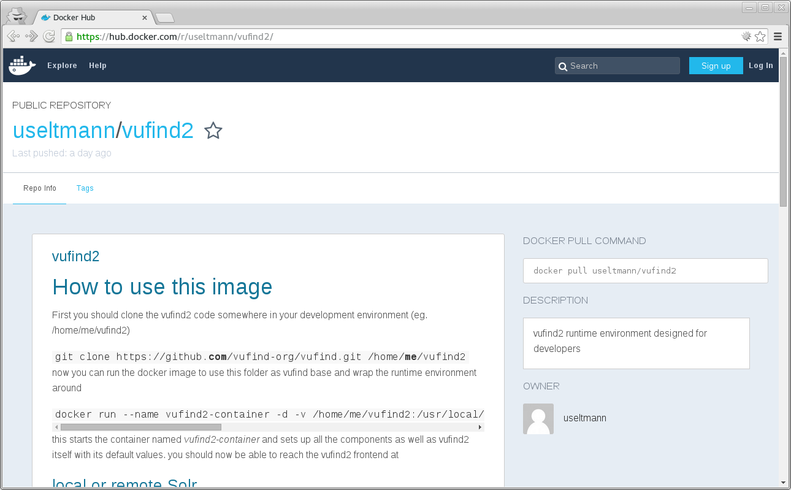

eine Vorstellung der Container-Virtualisierung
Docker
und ihr Einsatz in der Entwicklung von VuFind(2)
Ulf Seltmann <seltmann@ub.uni-leipzig.de>
Webmaster
Projekt finc
Universitätsbibliothek Leipzig
Über mich
- 2000 bis 2007 Administrator im Web-/Linux-Umfeld
- 2007 Programmierer für PHP im Bereich e-Commerce
- seit April 2013 Programmierer in der UB Leipzig,
erst im Projekt finc, jetzt als Webmaster
Die Aufgabenstellung
- einheitliche Basis für alle Entwickler
- Aktualisierung an einer Stelle
- automatischer Installations- und Konfigurationsprozess
- eigene und Projekt-Tools out-of-the-Box nutzbar
- individuelle Einschränkung so gering wie möglich
Was ist Docker
- Containervirtualisierung für linuxoide Betriebssysteme
- Resourcen werden per kernel namespaces, cgroups, chroot und selinux vom Host-System isoliert
- ein Image beinhaltet die notwendigen Abhängigkeiten eines auszuführendes Programmes
- ein Container ist der isolierte Bereich, in dem das Programm ausgeführt wird
Docker-Images
- leitet ab von Basis-Image
Dockerfilebeschreibt die zusätzliche Installation/Konfiguration- Image-Änderungen werden revisioniert
- Images werden ver-/ge-teilt über öffentliches oder privates Repository
Docker-Container
- basieren auf einem Image
- startet mit dem Start eines Programms und beendet mit dessen Beendigung
- können Volumes des Hostsystems oder anderer Container einbinden
- können Ports an das Hostsystem oder andere Container forwarden
Hello World!
#$ docker run --name hello-world ubuntu echo "Hello World!"Unable to find image 'ubuntu:latest' locally
Pulling repository ubuntu
91e54dfb1179: Download complete
d3a1f33e8a5a: Download complete
c22013c84729: Download complete
d74508fb6632: Download complete
Status: Downloaded newer image for ubuntu:latest
Hello World!
#$
- run-Kommando legt die Container-Konfiguration fest
Hello World! (Again)
#$ docker start -ai hello-worldHello World!
#$
- erneute Container-Starts führen den Container mit der Konfiguration aus, die mit dem run-Kommando festgelegt wurde
Das VuFind2-Image
VuFind-Sourcen klonen
#$ git clone https://github.com/vufind-org/vufind.gitKlone nach 'vufind'...
remote: Counting objects: 106741, done.
remote: Compressing objects: 100% (20/20), done.
remote: Total 106741 (delta 6), reused 0 (delta 0), pack-reused 106720
Empfange Objekte: 100% (106741/106741), 388.15 MiB | 3.83 MiB/s, Fertig.
Löse Unterschiede auf: 100% (69166/69166), Fertig.
Prüfe Konnektivität... Fertig.
VuFind-Container starten
#$ sudo docker run --rm -t -i \
-v $(pwd)/vufind:/usr/local/vufind2 \
-p 80:80 -p 443:443 -p 8080:8080 -p 3306:3306 \
useltmann/vufind2Unable to find image 'useltmann/vufind2:latest' locally
Pulling repository useltmann/vufind2
dbce69cc9264: Download complete
4c8cbfd2973e: Download complete
...
138278fd23d3: Download complete
Status: Downloaded newer image for useltmann/vufind2:latest
Setting up owner/group of dev...
Setting up runtime environment...
Setting up 10-mysqld...
...
Container aufrufen

http://localhost/vufind/
ausführliche Dokumentation

- Suche nach vufind2
- erfüllt alle Anforderungen von VuFind2
- als Entwicklungstestumgebung (DTE) konzipiert
Die Image-Tools
PHP-Einstellungen mit PHPInfo

http://localhost/phpinfo/
Debugging mit XDebug


Profiling mit XDebug und webgrind


http://localhost/webgrind/
OPCode- und Variable Cache mit XCache

http://localhost/xcache/
CI Test mit PHPUnit und CodeSniffer
sudo docker run --rm -t -i -v $(pwd)/vufind:/usr/local/vufind2 \
useltmann/vufind2 ciPHPUnit 4.8.9 by Sebastian Bergmann and contributors.
....
Time: 9.07 seconds, Memory: 95.00Mb
OK, but incomplete, skipped, or risky tests!
Tests: 801, Assertions: 2137, Skipped: 36.
Buildfile: /usr/local/vufind2/build.xml
vufind2 > php-cs-fixer-dryrun:
...
Fixed all files in 130.037 seconds, 18.000 MB memory used
BUILD FINISHED
Total time: 2 minutes 10.28 secondsBuild-Sourcen auf GitHub

https://github.com/finc/docker-vufind2/
Image auf Docker Hub
https://hub.docker.com/r/useltmann/vufind2/

Vielen Dank
Ulf Seltmann <seltmann@ub.uni-leipzig.de>
Webmaster
Projekt finc
Universitätsbibliothek Leipzig

- https://hub.docker.com/r/useltmann/vufind2/
- https://github.com/finc/docker-vufind2/
- https://finc.info/de/
- https://ub.uni-leipzig.de/